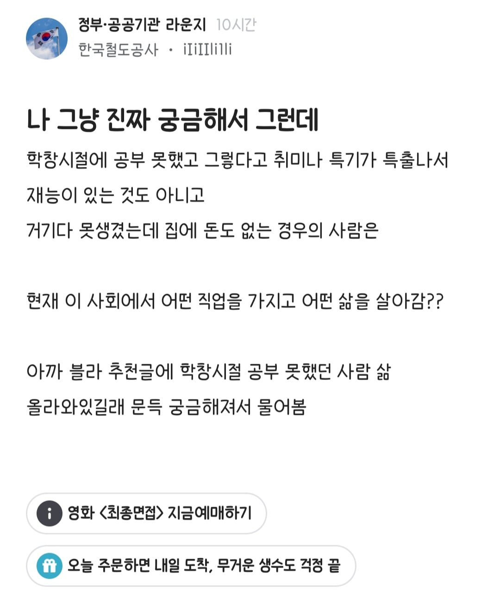

코레일 다니면서 뭔 드라마에서 떡볶이 처음먹는 재벌2세 빙의하는거냐 ㅋㅋ
3d업종의 서비스없이 일상을 영위할수있을까 ㅋㅋㅋ 뭔 빡대가리같은 질문이냐
명문대, 전문직, 대기업, 강남 아파트 외에는 공기처럼 취급하니까 모를 수 있지ㅋㅋㅋ
그냥 일하다보면 그런사람들 종종 마주치지않나?
철도공사가 뭐 대단히 특출나야 들어가는곳이 아닌데?
군대에서 사람만나보면 궁금하긴함
뭐 밖에서 그림을 그렸다던지 대학다녔는데 무슨과 라던지
하던일이 있다던지
뭔가 무슨 일을 하는게 상상이가는 사람이 있는데
어떤재주도 없이 잘하는게 단 하나도 없는 애들이 좀 보임
댓글도 퍼오지
다 나네 이 정도 댓글이라 안퍼옴
나네?
고졸하고 바로 대형따서 군대 운전병 들어가서 지금 시내버스 몰면서 나름 연봉 7천이상 받고있음
와 괜찮네 텃세 심하다던데 괜찬나
ㅈ도없다
기사 없어서 일만 뒤지게하니 다같이 죽을맛인데 텃세 부릴 여유가 어딨겠음ㅋㅋ
오 시바 많이받네 모집광고가 구라는 아니었구나? 리스펙
근무 스케줄 어떻게 됨? 밥은 잘 챙겨먹고 안전운전하소
5근1휴로 주야 교대뜀.
근데 사람 없으면 휴무날도 땜빵 들가서 달에 근무 27개 뛰는게 일상임.
밥시간은 널널하게나옴
출퇴근시간 아니면 평균적으로 한탕 갔다오면 40~50분 남음
오 많이받네 했는데 빡세네 미친..경기권임?
하루에 칙 몇번함 ?
차몰고 안나가면 대중교통은 거의 버스를 이용하는데 항상 감사하무니다
코레일에서 일함
대부분이 외노자들 하는 일이랑 겹치지 않나?
코레일 가는가 아님? 그런 인간이
공기업은 고사하고 9급도못가는 새끼들 뿔나서 코레일패고있는거보면 개그가따로없네 ㅋㅋㅋ
행동을 비난하는거지
아니 땐 굴뚝에 연기 안남..
그리고 아이러니하게 고졸 사무 엄청 채용하는 공기업이니까 중소기업 사무직도 중경외시 넘치는 요즘..
자기 회사 부장들 보면 알텐데
공부도 못하고 집에 돈도 없고 특출난 재능이 있는것도 아니라 이런저런 직업 전전하다가 몇년전부터 인테리어 시공일 하는데 나름 적성에 잘 맞아서 소득도 괜찮고 잘 하고 있음.
그리고 집에 돈이 없다보니 특출난 취미를 즐길수도 없고 다양한 경험을 해볼수도 없어서 그냥 게임하기 정도가 유일한 취미였는데, 돈을 벌면서 내가 생각보다 취향이 뚜렷한 사람이라는 것을 알게 됐다.
늦게나마 이것저것 즐겨보는중
ㅋㅋㅋㅋ 아서라~
코레일 힘들게 들어가서 야간에 밤새가며 초졸도 할수있는 단순업무 하는데
상사로 고졸출신, 철도전문대출신, 9급 허벌시절 부장님들 쫙있어서 현타왔나보지
난 저 사람이 왜 저런말 했는지 알거같음
코레일 그래도 공기업에서 쳐주는곳이라서 저기가는애들 거의 중경외시급애들 들어감, 근데 그정도 공부해서 들어갔는데 취객상대하고 이러니깐 여기라도 못들어오면 뭐하고사는거지 라고 궁금한거지
근데 저사람이 놓친건 공기업은 개꿀빠는 대가로 굉장히 많은걸 잃어버리는곳이라는거임
뭘 잃어버림?
그정도 애들이 안감 거긴 서교공
저긴 고졸채용도 일반의 절반 넘게 뽑아
고졸이든 학사든 석사든 박사든 만나보니 그냥 평범한 사람이더라
코레일이 공기업중에 돈은 젤 적게주고 일 잘못물리면 일은 일대로 헬게이트열리는걸로 아는데..
노조도 영크크의견은 안받아주고 으르신들 복지 위주로 싸운다고 너무 짜친다는 한 3년전 지인도르 평..
코레일도 비슷해 공기업 다 거기서 거기임 연고지에 편한게 장땡이라 서교공, 인마기지 정도가 선호 티어고 오지순환에 조금 더 주는건 다들 비선호해 최소B매치부터 좀 다르고
솔직히 사람은 나름의 테두리에서 살아가는데 그게 나는 군대에서 처음 깨짐 상상 이상의 사람이 많더라
코레일 다녀요
다들 적성 맞는 일 찾아서 잘 살았으면 좋겠다
공부가 인생에 전부인줄 아는 개 병신부류 ㅋㅋ
바코드 어그로에 먹이 좀 그만 줘라
ㅂㅅ인가
동창회를 가든 고향향우회를 가든 아님 사회생활을 좀 마니해보든
그런애들이 지역에서 형님동생하면서
지자체공사 수의계약따서 잘먹고 잘사는애들도 잇고
술처먹고 벌써 드러누운애들도 잇고
오손도손 가족꾸려 잘먹고 잘사는 애들도 잇고 그런거지
개씹창난 삶을 산다고 확인해야 맘이 편한가???ㅋ